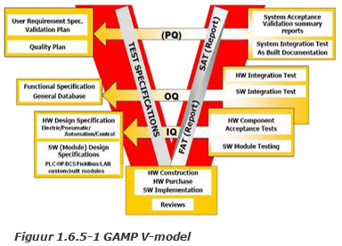

1.1. Aanleiding
Voor de interne controle en sturing voor veehouderijen is het van belang dat de informatie, die veehouders hebben over hun veehouderij, juist zijn en tijdig worden aangeleverd. Op dit moment zijn de informatiestromen bij deze organisaties niet juist ingericht en wordt de informatie pas geleverd. De veehouder heeft hierdoor geen goed beeld van zijn/haar organisatie en kan daardoor de organisatie lastig sturen en beheersen.
Ook de voerleveranciers hebben op dit moment geen informatie over de voervoorraden van de veehouderijen. Hierdoor kunnen de voerleveranciers pas een logistieke planning maken als een veehouder voer besteld. Door de informatie eerder te ontvangen kunnen zij een logistieke planning maken met kortere reistijden en minder personeel.
1.2. Organisatie
Het internethuis is gevestigd in Doetinchem en het bedrijf richt zich op Internet of Things (IOT) en 4G oplossingen. Denk hierbij aan sensoren die geplaatst worden op een hooizolder om de temperatuur in de gaten te houden. Het bedrijf heeft 20 werknemers en heeft geen vaste werktijden, waardoor de werknemers voornamelijk thuis of op locatie bij een opdrachtgever werken.
1.3. Doelstelling
De doelstelling voor dit onderzoek is om een meetsysteem te ontwikkelen waardoor veehouders kunnen zien hoeveel voer zij op dat moment in voorraad hebben. Ook dient dit meetsysteem zichtbaar te zijn voor de voerleveranciers zodat zij hun logistieke planning op de voorraad voer van de veehouders kan afstemmen.
1.4. Scope
Bij dit onderzoek wordt er vooral gekeken naar veehouderijen die varkens houden. De voorraad bij deze veehouders zit veelal in silo’s. In dit onderzoek zal dan ook alleen gekeken worden naar het voer wat in de silo’s bij de veehouderijen staat.
1.5. Stakeholders
1.5.1. Veehouderijen
Veehouderijen zijn bedrijven die doormiddel van vee, producten produceren die zij verkopen. De veehouders zouden graag op een eenvoudige manier juiste informatie willen ontvangen voor hun organisatie.
1.5.2. Voerleveranciers
Het leveren van het voer gebeurt nu zodra een veehouder belt en de hoeveelheid voer doorgeeft. De voerleveranciers hebben er baat bij als zij tijdig weten welke veehouders in de toekomst voer nodig hebben. Door tijdig te weten welke boeren voer nodig hebben kan er een logistieke planning worden gemaakt waarbij minder kilometers worden gemaakt wat daardoor voordeliger is voor de voerleveranciers.
1.5.3. Het internethuis
Het Internethuis is een organisatie die projecten uitvoert voor opdrachtgevers. Dit onderzoek is een onderdeel van een groot project om zoveel mogelijk data in één visualisatie programma te weergeven voor veehouderijen, een ERP-systeem. Indien de uitkomst van dit onderzoek een goede oplossing biedt voor de opdrachtgevers van deze opdracht kan Het Internethuis deze informatie gebruiken bij de overige onderdelen van dit project.
1.6. Projectresultaat
1.6.1. Probleemstelling
De veehouderijen kunnen op dit moment niet bepalen hoeveel voorraad voer er in een silo zit. Hierdoor wordt er veel op het laatste moment besteld door de veehouders, waardoor de voerleveranciers de logistieke planning niet optimaal kunnen vormgeven. Ook zorgt dit probleem ervoor dat de veehouderijen niet tijdig de juiste informatie ontvangen over hun voorraden en daardoor de organisatie niet op basis van de juiste voorraadinformatie kunnen besturen.
Rapport
In dit rapport dient het onderzoek beschreven te worden die is gedaan om de onderzoeksvraag te beantwoorden. De conclusies van dit rapport zullen bestaan uit aanbevelingen voor de opdrachtgever.
Prototype
Doormiddel van een werkend prototype dient de voorraadinformatie real-time te worden vastgelegd. Hiernaast wordt de data weergegeven in een applicatie op de computer.
1.6.3. Hoofdvraag en Deelvragen
De hoofdvraag is:
"Welk systeem kan de voorraadinformatie van (varkens)veehouderijen real-time meten en hoe kan deze informatie aan zowel de veehouders als de leveranciers worden geleverd?”
De hoofdvraag dient te worden beantwoord doormiddel van de volgende deelvragen:
• Op welke manier is de huidige situatie ingericht?
• Wat zijn de knelpunten en problemen in de huidige situatie?
• Wat zijn de eisen en wensen van de belanghebbenden?
• Welke alternatieve oplossingen zijn er die de eisen, wensen, knelpunten en problemen kunnen oplossen?
1.6.4. Toegepaste theorie
Lean
Lean is een business strategie en vooral een manier van werken waarbij alles en iedereen in de onderneming zich richt op het creëren van waarde voor de klant in alle processen. Hiervoor worden de verspillingen geëlimineerd. Door de klant centraal te stellen creëer je maximaal toegevoegde waarde voor de klant tegen minimale inspanning. Hierdoor verbetert de kwaliteit, worden doorlooptijden verkort en worden de kosten verminderd (LeanSixSigma, z.d.). Doormiddel van deze theorie kan het proces rondom de voorraadinformatie op een juiste manier worden ingericht. Ook kan doormiddel van JIT, Just In Time Management het proces zodanig ingericht worden dat de voorraadkosten van de veehouder worden verminderd.
GAMP
GAMP is een richtlijn voor het ontwerpen en testen van industriële toepassingen. Onder andere het V-model (Figuur 1.6.5 1) maakt deel uit van GAMP, en zorgt ervoor dat alle stappen voor het ontwikkelen van een industriële toepassing correct worden afgehandeld. Door de V aan de linkerkant te starten en naar beneden toe te werken komen alle zaken langs die afgehandeld moeten worden, voordat met de implementatie begonnen wordt. De onderkant van de V staat voor het bouwen en het implementeren van de software en hardware. Daarna wordt langs de rechterzijde van de V weer omhoog gewerkt om elk onderdeel op de juiste manier te testen.
Het V-model is voornamelijk gebruikt om structuur aan te brengen in de ontwikkeling van de besturing. Hierdoor kan de besturing in de juiste volgorde ontwikkeld en getest worden.

1.7. Risico’s
Hier zijn de risico’s opgeschreven die tijdens het project kunnen optreden. Deze risico’s zijn opgesplitst in technische en management risico’s.
1.7.1. Technische inhoudelijke project risico’s
• Leveringsvertraging van componenten
Het is mogelijk dat de elektrocomponenten vertraging hebben, omdat deze uit China moeten komen.
Kans: klein
Gevolg: vertraging van het project
1.7.2. Projectmanagement risico’s
• Afwezigheid van de stagebegeleider
Het is mogelijk dat de stagebegeleider niet aanwezig kan zijn om diverse redenen.
Kans: middelmatig
Mogelijk gevolg: een collega vragen voor ondersteuning.
• Gebrek aan kennis
Het is mogelijk dat de stagiaires over niet genoeg of incorrecte kennis beschikt, doordat deze nog niet gewerkt heeft met de software of nog weinig kennis heeft van bedrijfsprocessen.
Kans: klein, er kan op veel manieren aan de juiste informatie worden gekomen. Doormiddel van, de begeleiders, docenten aan de HAN en andere informatiebronnen.
Mogelijke gevolgen: expert inhuren of cursus volgen